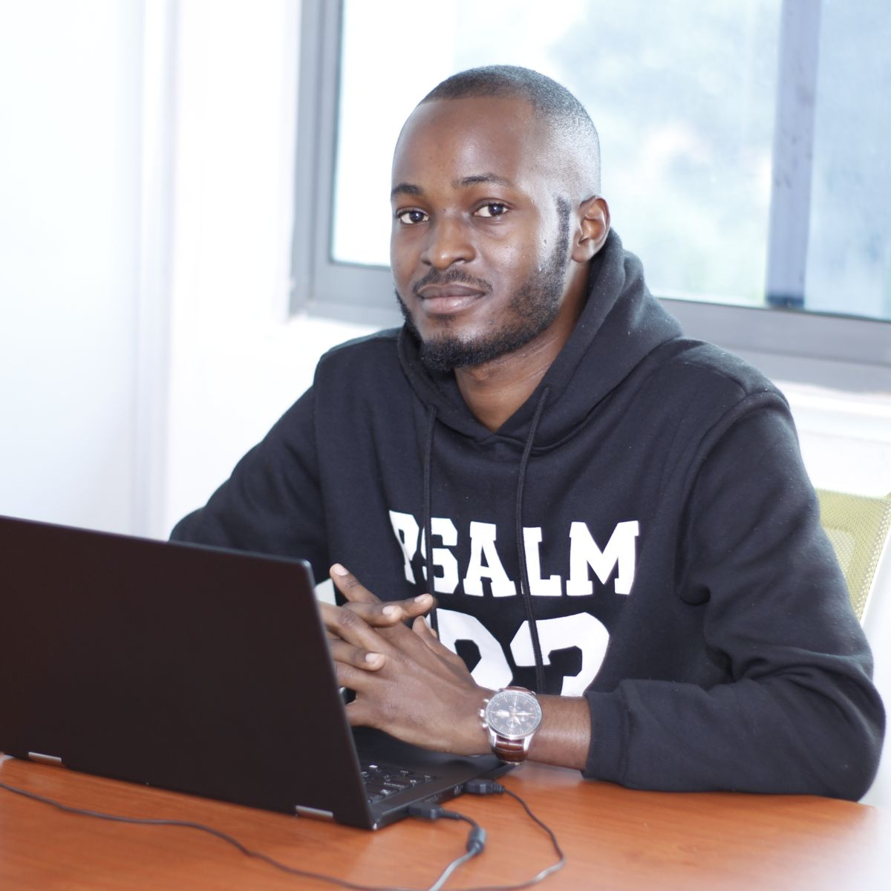

full-stack dev
I love creating beautiful user experiences, and hence i tend to get involved in design quite alot. I develop applications primarily in Ruby on Rails and Javascript. I am completely flexible and open to learning new technologies. In the past i have used and amassed some experience in C# and ASP.Net, Microsoft SQL server among others
My Journey in IT began with WordPress theme customisation and it's something i still do upto date. My Portfolio includes websites i designed using WordPress like Justified Ecastsy, Freeman Movers, Sweet Lulus Cakes among others
I have a strong passion for mental health and it's something i have fashioned into a service. I took a 6 months certificate training about couselling and its a service i offer freely to anyone who needs it. In addition, i am the founder of Broken Vessel, an online community dedicated to creating awareness about mental health in society and workplaces
Full-stack developer working remotely
My name is Leonard Kanyesigye. I am a 26 year old currently living in Kampala, Uganda and working as a remote web developer. After majoring in Fine Art for 6 years in highschool, my love for creating beautiful experiences led me to the IT world as i saw it as opportunity to being able to bring my imaginations to life.
I have previously worked as Sales Executive for an IT firm in Uganda, and i was responsible for meeting up clients, interpreting their system requirements and recommending solutions that would help them meet their needs. Also, I worked as the Operations director for a start Up, and my main role was to oversee the development of all company projects and also act as a link between the customer and the product.
If i am not coding, I am playing FIFA or watching something intriguing that will keep me on edge wondering whats next. I have a passion for helping people understand and maintain a positive mental health, and i will always create time to listen to someone who needs someone to talk too.I love dogs, i don't have one but plan to adopt one in a nearby future.
8 months experience working remotely from Microverse
Bachelors degree in Software Engineering from Makerere University
Spent my entire 6 years of highschool at Ntare School majoring in Physics, Math, Economics and Fine Art
That's a little bit about me, Send me a message